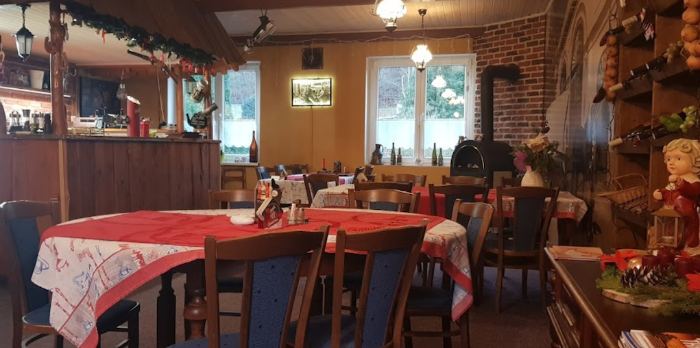
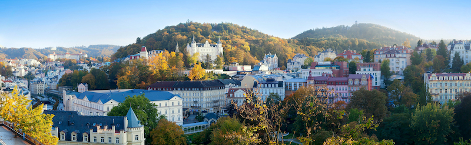

We cook traditional Czech cuisine! That means tender meat, mashed, boiled or baked potatoes, and dumplings. But you can also enjoy fresh fish and salads. Whether the daily menu includes duck, trout, steak or salmon, you will feel at home with us.
Come relax, warm up by the fire, listen to the soothing sounds of the river Teplá, and most importantly, enjoy tasty food with ice-cold beer or fine wine. In the meantime, the kids can explore our playground with sandpit and slide.
"Podkova" means horseshoe in Czech. So why did we name our restaurant "horseshoe"? According to an old legend, in the 18th century, Tsar Peter I the Great forged a horseshoe for his horse right here, in the iron mill in Březová. The Tsar was physically fit, appreciated manual skills, and had a warm attitude towards the common people. We are certain that he would stop by at our place to have a beer or two!
We are located just minutes away from the center of the picturesque town of Karlovy Vary, in the region Březová. The Teplá River flows right by our restaurant and continues on to the Colonnade. After your meal, don't forget to go for a walk in the Karlovy Vary forests. You'll be following in the footsteps of Karl Marx, Johann Wolfgang von Goethe, Frederic Chopin, and many others who loved Karlovy Vary.
